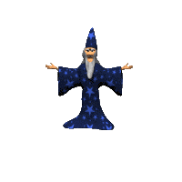

Somos un grupo de estudiantes de informática de la Universidad de Tarapacá en Chile, que nos propusimos un proyecto en donde planeamos enseñar programación a través de Python a los usuarios de la web debido a que muchas personas desconocen nuestra vocación, esta sería una gran oportunidad para que interesen en la magia que es programar y sepan que todo lo que son capaces de ver y hacer a traves de una pantalla , se realizó con un grupo de programadores y saber si les interesaría ser nuestros aprendices en este mundo de magia.
El primer pergamino mágico llamado "Administración" se encuentra para en caso de cualquier solicitud, bug que quiera reportar, problema relevante al funcionamiento de la página ustéd se pueda comunicar con alguno de los administradores del sitio web y estos solucionen o cumplan dicha solicitud.
El segundo pergamino presente llamado "Librería", se encuentra para que usted pueda visualizar cada ítem de contenido disponible en nuestra página web, en donde tiene contenido desde los fundamentos de la programación hasta una de las estructura básica de la programación que es la estructura IF en donde utilizamos el lenguaje Python para guiarte en el magico mundo de la programación.
El tercer y penúltimo pergamino que se hace llamar "Ejercicios" propone situaciones en donde a través de la "mágia" se solucionen dichos problemas con el uso de los items de contenido especificados en cada situación.
